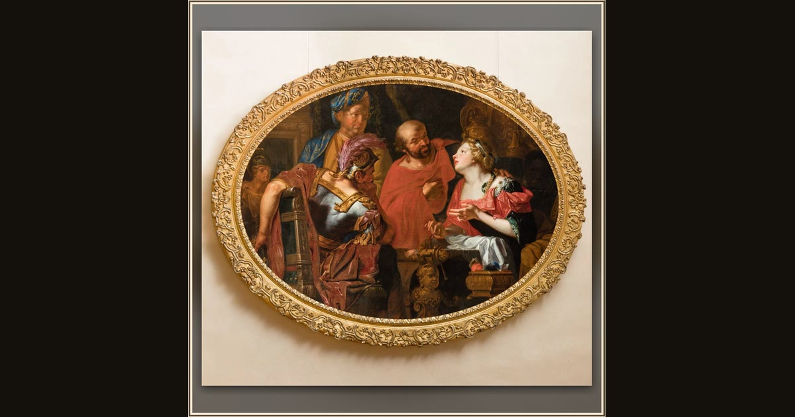

Penelope and Her Suitors
Johann Rudolf Byss · 1692 · National Gallery Prague · Prague, Czech Republic
For years a crowd of pushy suitors has filled Penelope’s home, eating her food and demanding she choose a new husband. Johann Rudolf Byss shows her among them, still holding them off with her cleverness while she waits and hopes for Odysseus. Explore its place